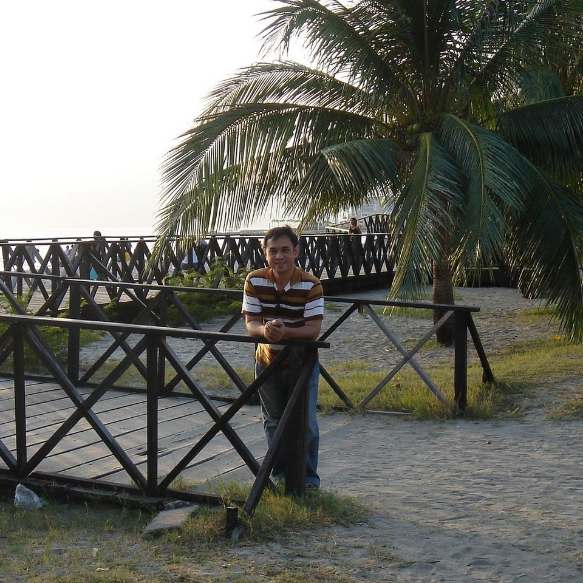

Boardwalk
Boardwalk SBMA is a premier waterfront leisure hub located in Subic Bay Freeport Zone in the Philippines. It offers a vibrant mix of dining, shopping, and entertainment options, with stunning views of the bay and nearby mountains. Visitors can enjoy a leisurely stroll along the boardwalk, try delicious local and international cuisine, shop for unique souvenirs, and relax in the scenic surroundings. Whether you're looking for a fun day out with family and friends or a romantic evening by the water, Boardwalk SBMA provides a fantastic experience for all.

Location via google map
Boardwalk Subic BayAbout
Boardwalk SBMA is a commercial and leisure development located in Subic Bay Freeport Zone, Philippines.
It features a picturesque boardwalk lined with shops, restaurants, and entertainment options, offering visitors a unique
experience by the sea. The area is popular among tourists and locals alike for its stunning views, lively atmosphere, and
variety of activities. Whether you're looking to shop, dine, relax, or simply enjoy the ocean breeze, Boardwalk SBMA has
something for everyone.
Vehicle to use
There is a taxi available for transportation in front of Subic Gym.